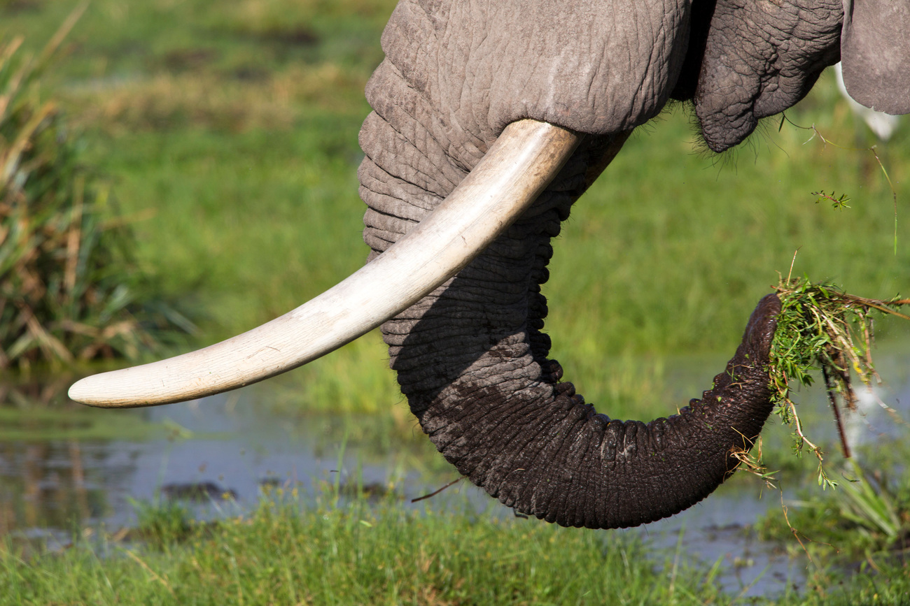

AFRICAN ELEPHANT
-
Elephants are large animals known as Elephantidae and the order Proboscidea. There are Three Species of Elephants
- African Savanna (Bush)
- The Asian Elepants
- The African Forest Elephant
-
Elephants eat grasses, leaves, shrubs, fruits and roots depending on the season and their habitat. When it’s particularly dry, elephants will eat more woody parts of trees and shrubs like twigs, branches and barks. They need to eat up to 150kg of food per day – that's around 375 tins of baked beans – although half of this may leave the body undigested. Elephants eat so much that they can spend up to three-quarters of their day just eating.
-
Elephants have around 150,000 muscle units in their trunk. Their trunks are perhaps the most sensitive organ found in any mammal. Elephants use their trunks to suck up water to drink – it can contain up to 8 litres of water. They also use their trunks as a snorkel when swimming
-

Elephant tusks are actually enlarged incisor teeth which first appear when elephants are around 2 years old. Tusks continue growing throughout their lives. Tusks are used to help with feeding - prising bark off trees or digging up roots - or as a defense when fighting. But these beautiful tusks often cause elephants danger. They're made from ivory; a much desired object. Read on to find out why elephants are under threat.
-
An elephant’s skin is 2.5cm thick in most places. The folds and wrinkles in their skin can retain up to 10 times more water than flat skin does, which helps to cool them down. They keep their skin clean and protect themselves from sunburn by taking regular dust and mud baths.
-
Elephants communicate in a variety of ways - including sounds like trumpet calls (some sounds are too low for people to hear), body language, touch and scent. They can also communicate through seismic signals - sounds that create vibrations in the ground - which they may detect through their bones.
-
Amazingly, elephant calves are able to stand within 20 minutes of being born and can walk within 1 hour. After two days, they can keep up with the herd. This incredible survival technique means that herds of elephants can keep migrating to find food and water to thrive.
-

Bull calves get kicked out of the herd when they reach about 12 years of age to join the bull “bachelor” herds or to become a solitary bull. Bull herds will only join a female herd when it is mating season, or at a waterhole